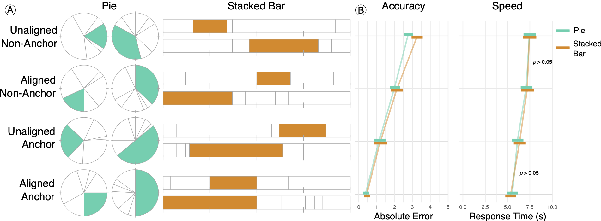

Research
-

I'm a Computer Science PhD student in the Visual Computing Laboratory at the University of Wisconsin-Madison, advised by Michael Gleicher.
My research develops computational methods to better understand how people perceive and interpret visual representations of large and complex datasets, with a focus on data subset selection and data summarization. I aim to leverage human perception to design visualizations that enable accurate interpretation.
I taught CS 400, the third course in UW-Madison's introductory programming sequence.
